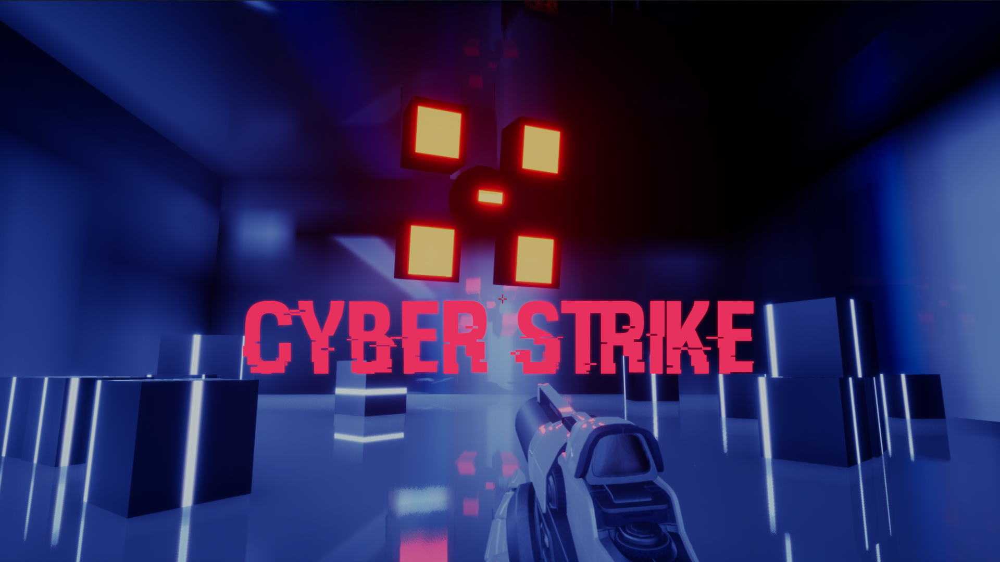

Présentation du Projet
Cyber Strike est un projet de fin d'étude réalisé en solo, conçu sous le moteur Unreal Engine 4. Il s'agit d'un FPS dynamique dans une ambiance cyberpunk futuriste combinant des mécaniques de survie par vagues d'ennemis et des composantes rogue-lite.
Concept & Gameplay
Le joueur est plongé dans une arène haute technologie et doit repousser des vagues successives d'unités cybernétiques hostiles. Le gameplay met l'accent sur la mobilité, la réactivité des tirs, la gestion de l'arsenal et l'adaptation aux différents types d'ennemis.
Missions & Réalisations Clés
▸
Architecture & Blueprints / C++ : Mise en place du système d'armes, des trajectoires balistiques, de la détection d'impacts et de la gestion de la santé/armure.
▸
Système de Vagues & Spawning : Programmation du gestionnaire de vagues procédurales avec montée en difficulté progressive.
▸
Intelligence Artificielle des Ennemis : Conception des comportements d'attaque à distance, de traque et d'encerclement via Behavior Trees et Navigation Mesh.
▸
Level Design & Éclairage : Création de l'arène de combat avec circulation fluide, points de couverture stratégiques et ambiance néon/cyberpunk.
▸
Interface Utilisateur (HUD/UI) : Conception du réticule interactif, jauges d'énergie/munitions, notifications de score et d'éliminations.
Galerie de Captures (Wix)
